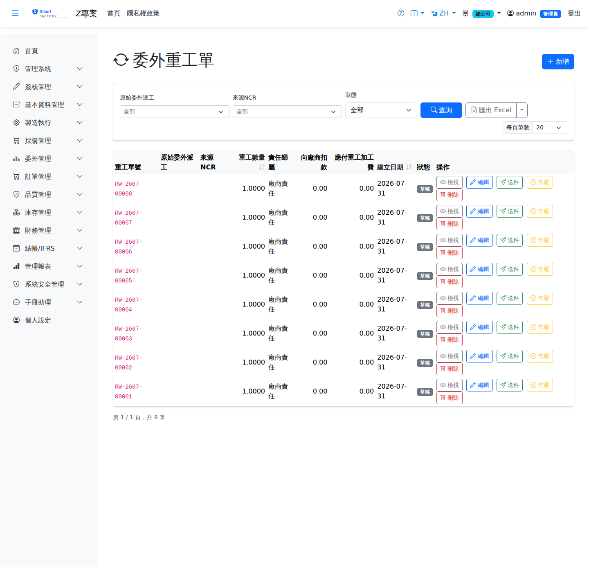

委外重工單Outsource Rework
委外進貨檢驗（IQC）不合格、或委外廠送件後發現問題時，建立委外重工單追蹤重工品的送件與收回，並依When outsourced goods fail incoming inspection (IQC), or a problem is found after parts have been sent, an outsource rework document tracks the parts sent out and received back, and allocates the cost according to 責任歸屬Liability Party決定成本流向：廠商責任向廠商扣款、我方責任列應付重工加工費、共同責任依比例拆分。 Determines the cost flow: a vendor liability becomes a chargeback, our liability becomes a rework processing fee payable, and shared liability is split by percentage.

查詢Search
單據狀態Status
| 狀態Status | 說明Guide |
|---|---|
| 草稿 DraftDraft | 已建立未生效，可自由編輯、刪除。Created but not yet effective; can be freely edited or deleted. |
| 已送件 SentSent | 不良品已送回委外廠重工，等待收回；不可編輯。The rejects have been sent back to the subcontractor for rework and are awaiting return; the document cannot be edited. |
| 已收回 ReceivedReceived | 重工品已收回，單據結案，不可再變更。The reworked parts have been received and the document is closed; it can no longer be changed. |
| 已作廢 VoidVoid | 草稿或已送件狀態可作廢；已收回不可作廢。Draft and Sent documents can be voided; once received, they cannot. |
成本／索賠模型（責任歸屬＋雙路徑）Cost and claim model (liability plus two paths)
| 責任歸屬Liability Party | 成本流向Cost flow |
|---|---|
| 廠商責任 VendorVendor | 廠商占比固定 100%：「向廠商扣款」＝重工成本全額（開借項通知或沖抵下期委外應付），加工費 0。With the vendor share fixed at 100%, the "vendor chargeback" is the full rework cost (a debit note or an offset against the next outsource payable) and the processing fee is 0. |
| 我方責任 UsUs | 廠商占比固定 0%：「應付重工加工費」＝加工費全額（新委外 PO 或成本加項），扣款 0。With the vendor share fixed at 0%, the "rework processing fee payable" is the full fee (a new outsource PO or a cost add-on) and the chargeback is 0. |
| 共同責任 SharedShared | 輸入廠商責任比例（0–100）：扣款＝重工成本 × 廠商占比、加工費＝加工費 × 我方占比。Enter the vendor share (0–100): chargeback = rework cost × vendor share, processing fee = fee × our share. |
作業流程Process
建立與送件Creating and sending
收回Receive
列印Printing
清單每列的 按鈕（需有列印權限）在新分頁開啟含 QR Code 的列印單，可直接列印或另存 PDF。列印單含原派工、委外採購單、品號與品名、重工數量、責任歸屬與重工費用。The button on each row of the list (print permission required) opens a printout with a QR code in a new tab, ready to print or save as PDF. The printout shows the original dispatch, outsource PO, product code and name, rework quantity, liability and rework charges.
欄位說明Field reference
欄位Field
| 欄位Field | 說明Guide |
|---|---|
| 委外重工單號Rework No | 系統採番，不可修改Numbered by the system; not editable |
| 原派工單Original dispatch | 必填Required 產生不良、需要重工的來源派工單The dispatch that produced the rejects and needs rework |
| 來源 NCRSource NCR | 觸發本次重工的不合格通知單，用於品質追溯The non-conformance report that triggered this rework, for quality traceability |
| 委外採購單Outsource purchase order | 重工作業對應的委外採購單Outsource PO the rework belongs to |
| 重工數量Rework Qty | 必填Required 要重工的不良品數量Quantity of rejects to be reworked |
| 重工原因Rework Reason | 必填Required 造成重工的原因說明，供品質改善分析Reason for the rework, used in quality improvement analysis |
| 責任歸屬Liability Party | 必填Required 判定責任方（本公司／委外廠商／共同分擔），決定費用由誰負擔Determines the liable party (our company / the subcontractor / shared), and therefore who bears the cost |
| 廠商負擔比例Vendor Liable % | 責任為共同分擔時，廠商應負擔的百分比；據此拆分重工成本Percentage the subcontractor bears when liability is shared; the rework cost is split accordingly |
| 重工成本Rework Cost | 本次重工發生的總成本Total cost incurred by this rework |
| 加工費Processing Fee | 應付委外廠商的重工加工費；廠商責任部分會自加工費中扣抵Rework processing fee payable to the subcontractor; the vendor's share is deducted from the fee |
| 備註Notes | 補充說明Notes |
相關畫面Related screens
委外收貨Outsource receipt、委外採購單Outsource purchase order、不合格品單（NCR）Non-Conformance Reports、進貨退出Goods Return